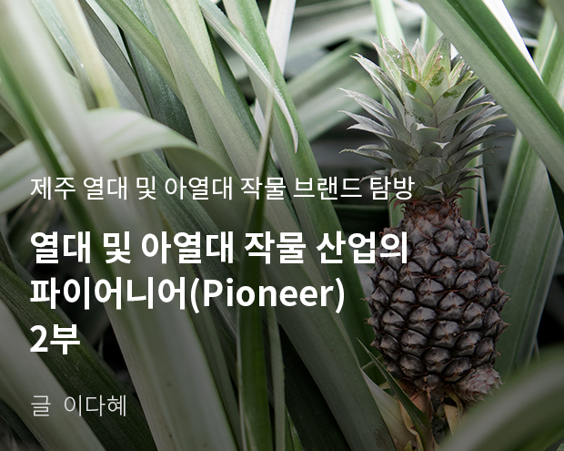
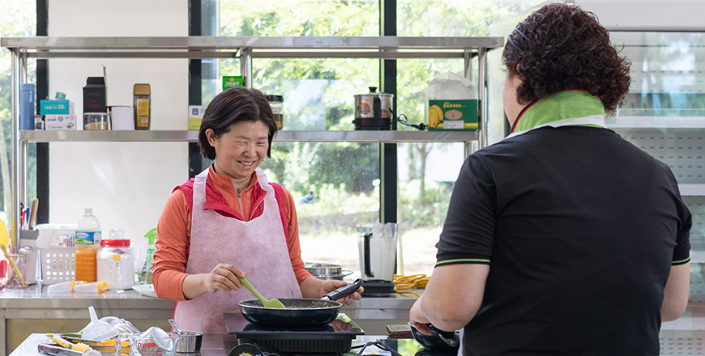

기획취재콘텐츠
- Home
- 제주라이프
- 기획취재콘텐츠
열대 및 아열대 작물 산업의 파이어니어(Pioneer) 2부새로운 글



열대 및 아열대 작물의 6차 산업화를 선도하는 ‘유진팡’
2미터가 넘는 바나나 나무가 빼곡하게 들어선 비닐하우스에 들어가자 나무마다 탐스럽게 바나나 과수가 매달려 수확을 기다린다. 다른 하우스에는 길쭉한 이파리 사이로 파인애플 과육이 자라고 한쪽에는 사탕수수, 망고, 파파야 등 다양한 아열대 작물이 가득하다. 노지에 심은 아로니아 나무에는 탐스러운 아로니아 열매가 주렁주렁 매달려 있다. 창고 겸 체험공간 한쪽 쇼케이스에는 바나나, 파인애플 등 아열대 작물로 만든 잼과 식초가 진열되어 있다. 제주 바나나의 부흥을 함께한 농장, 유진팡의 풍경이다.
- 유진팡 농장 하우스 내부 전경 ⓒ윤소진 -
유진팡의 김순일 대표는 2012년 농업기술원에서 받아온 바나나 묘종을 실험재배하며 열대과일 농장을 시작했다. 실험 재배한 바나나를 맛보니 시중에 판매되는 것보다 맛과 향이 더 깊었다. 수입산 열대 과일을 먹을 때마다 몸에 탈이나곤 했는데, 약품과 방부처리를 하지 않은 친환경 바나나를 먹으니 유독 예민하고 아팠던 몸에도 큰 탈이 나지 않고 오히려 편안했다. 건강한 과일을 찾는 소비자에게 충분히 매력적일 수 있다고 판단한 김순일 대표는 2016년 바나나나무 600주를 식재하고 2016년부터 본격적으로 바나나 생산을 시작했다.
친환경 바나나의 맛을 소비자에게 전하는 것이 가장 최우선의 가치였기 때문에 유진팡에서는 몸에 해로운 약제를 뿌리지 않았다. 약품을 치지 않고 재배하려니 해충이 말썽이었다. 특히 열대작물은 다른 작물에 비해 해충과 거미줄이 많이 생긴다. 김순일 대표는 남편과 함께 친환경 바나나 재배시설 문제 해결을 위해 머리를 맞댔다. 그렇게 ‘삼각고 비닐하우스’가 탄생했다.
- 삼각고 비닐하우스에서 친환경으로 재배되는 바나나 ⓒ윤소진 -
양 옆을 밀폐하고 삼각 형태의 천장을 열어 뜨거운 공기가 상승하는 원리를 통해 자동으로 열 교환과 내부 순환이 이뤄지게끔 설계했다. 열 교환과 내부 순환이 이뤄지며 하우스 내 상부와 하부 온도차가 줄어 들었다. 키가 큰 바나나 나무를 일반 하우스에 심었더니 상부는 열을 많이 받아 잎이 상했고, 하부는 제대로 열을 받지 못해 잎이 자라지 못했다. ‘삼각고 비닐하우스’로 온도 차를 줄이니 상하부 모두 바나나가 자라기 좋은 온도를 유지할 수 있었다. 양 옆으로 드나들던 해충의 유입도 줄어들었다. ‘삼각고 비닐하우스’는 해충 유입을 막고 작물 재배 효과를 입증해 2016년 특허가 등록됐다. 정식 명칭은 ‘환기용 삼각 탑루프를 가지는 비닐하우스’다.
국내산 바나나의 성공 이후 이어 파파야를 심었다. 채소용 그린 파파야는 활용도가 높아 직거래로 상당량 판매 됐다. 열대 및 아열대 작물이 국내에서 가능성이 있다고 판단, 본격적으로 실험 재배동을 건립했다. 옐로우 파파야, 사탕수수, 파인애플 등 다양한 아열대 작물의 재배 실험을 자체적으로 실시하고 상품성이 좋고 재배 기술이 안정된 작물은 본격적인 재배를 시작한다. 최근 재배와 판매를 시작한 파인애플이 대표적이다.
- 유진팡 농장에서 재배하는 그린 파파야 ⓒ윤소진 -
열대 및 아열대 작물 소비량을 증대하고 대중성을 확보하기 위해 체험 프로그램 운영, 가공품 개발 및 판매도 시작했다. 본격적인 열대 및 아열대 작물 6차 산업을 시작한 것. 유진팡은 31,404㎡(9,500평)규모의 농장에서 직접 바나나, 파파야, 아로니아, 파인애플 등을 수확하고 이렇게 수확한 작물로 잼과 식초를 만들어보는 체험을 운영한다. 체험장 한쪽에는 아로니아, 바나나, 파인애플 등 수확물로 가공한 잼과 식초를 판매한다. 뿐만아니라 한라봉, 감귤, 풋귤로 잼과 식초, 수제청을 만들어 체험장과 온라인 직거래 마켓에서 판매한다. 바나나로는 반건조칩을 만들었다.
- 유진팡에서 생산하는 잼과 식초 등 아열대 과일 가공식품 ⓒ윤소진 -
옆으로 슬라이스를 해야 바나나의 단맛이 살아납니다. 반건조 바나나칩은 달콤한 건강 간식으로 인기가 많아요. 잼과 식초 체험도 꾸준히 오고 있어요. 체험객의 만족도도 높은 편입니다.
- 유진팡 대표 김순일
김순일 대표는 열대 및 아열대 작물이 버려지지 않고 일상에서 자주 활용될 수 있는 방법을 고민하던 중 제주농업기술원의 교육 프로그램을 알게 됐다. 과일을 활용해 잼과 식초를 만드는 기초 과정을 수강하고 여기에 바나나, 파인애플 등 열대 작물을 적용했다. 쉽게 무르고 변색이 쉬운 열대 과일의 특성상 상품성 있는 제품을 개발하는 게 쉽지는 않았다. 계속 연구를 통해 열대 과일의 맛을 극대화하며 변색을 막아주는 레몬즙의 적정 함량을 도출했다. 천연 발효 과일 식초는 알코올에 인공 배양한 초산균을 넣어 2~3일만에 속성으로 발효하는 일반식초와 달리 현미와 누룩만을 활용해 1년 이상 숙성해 만드는 건강 식초다. 무농약 재배 바나나를 천연 발효한 바나나 식초는 고급 건강식으로 비싼 값에도 꾸준히 판매 중이다. 서귀포 호근동에 있는 과일카페 ‘유진팡’에서는 바나나 막거리 담그기 체험 프로그램을 운영한다. 여행객은 물론 인근 주민이 직접 바나나 막걸리를 만들기 위해 주기적으로 과일카페 ‘유진팡’을 찾는다.

- 바나나 식초 만들기 시연 -
- (좌)바나나 식초, (우)바나나 식초를 곁들인 그린 파파야 샐러드 -
열대 및 아열대 작물의 6차 산업화를 위한 투자는 이제 시작이다.
아열대 과일 관광 농원을 만들고 있어요. 단지 수확 체험에 그치지 않고 열대 및 아열대 작물을 가까이서 관찰하고 수확하고 수확한 과일을 직접 시식하거나 잼과 식초로 만들어 가지고 갈 수 있는 열대 및 아열대 과일 테마파크를 만들 예정입니다.
- 유진팡 대표 김순일
이전글
다음글